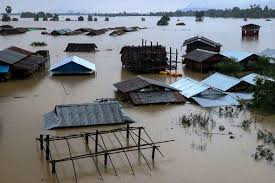
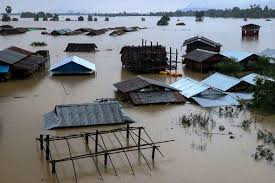

FLOOD
A flood is an overflow of water that submerges land that is usually dry.European Union (EU) Floods Directive defines a flood as a covering by water of land not normally covered by water.
 

In the sense of "flowing water", the word may also be applied to the inflow of the tide. Floods are an area of study of the discipline hydrology and are of significant concern in agriculture, civil engineering and public health.Flooding may occur as an overflow of water from water bodies, such as a river, lake, or ocean, in which the water overtops or breaks levees, resulting in some of that water escaping its usual boundaries.
Effects of Flood
Primary Effects
The primary effects of flooding include loss of life, damage to buildings and other structures, including bridges, sewerage systems, roadways, and canals. Floods also frequently damage power transmission and sometimes power generation, which then has knock-on effects caused by the loss of power. This includes loss of drinking water treatment and water supply, which may result in loss of drinking water or severe water contamination. It may also cause the loss of sewage disposal facilities. Lack of clean water combined with human sewage in the flood waters raises the risk of waterborne diseases, which can include typhoid, giardia, cryptosporidium, cholera and many other diseases depending upon the location of the flood.
Secondary and long-term effects
Economic hardship due to a temporary decline in tourism, rebuilding costs, or food shortages leading to price increases is a common after-effect of severe flooding. The impact on those affected may cause psychological damage to those affected, in particular where deaths, serious injuries and loss of property occur.Urban flooding can lead to chronically wet houses, which are linked to an increase in respiratory problems and other illnesses.Urban flooding also has significant economic implications for affected neighborhoods. In the United States, industry experts estimate that wet basements can lower property values by 10–25 percent and are cited among the top reasons for not purchasing a home.
Benefits
Floods (in particular more frequent or smaller floods) can also bring many benefits, such as recharging ground water, making soil more fertile and increasing nutrients in some soils. Flood waters provide much needed water resources in arid and semi-arid regions where precipitation can be very unevenly distributed throughout the year and kills pests in the farming land. Freshwater floods particularly play an important role in maintaining ecosystems in river corridors and are a key factor in maintaining floodplain biodiversity.For some fish species, an inundated floodplain may form a highly suitable location for spawning with few predators and enhanced levels of nutrients or food.
Forecasting
Anticipating floods before they occur allows for precautions to be taken and people to be warned so that they can be prepared in advance for flooding conditions. For example, farmers can remove animals from low-lying areas and utility services can put in place emergency provisions to re-route services if needed. Emergency services can also make provisions to have enough resources available ahead of time to respond to emergencies as they occur. People can evacuate areas to be flooded.
In order to make the most accurate flood forecasts for waterways, it is best to have a long time-series of historical data that relates stream flows to measured past rainfall events.
Radar estimates of rainfall and general weather forecasting techniques are also important components of good flood forecasting. In areas where good quality data is available, the intensity and height of a flood can be predicted with fairly good accuracy and plenty of lead time. The output of a flood forecast is typically a maximum expected water level and the likely time of its arrival at key locations along a waterway.
Flood safety planning
At the most basic level, the best defense against floods is to seek higher ground for high-value uses while balancing the foreseeable risks with the benefits of occupying flood hazard zones.Critical community-safety facilities, such as hospitals, emergency-operations centers, and police, fire, and rescue services, should be built in areas least at risk of flooding. Structures, such as bridges, that must unavoidably be in flood hazard areas should be designed to withstand flooding. Areas most at risk for flooding could be put to valuable uses that could be abandoned temporarily as people retreat to safer areas when a flood is imminent.